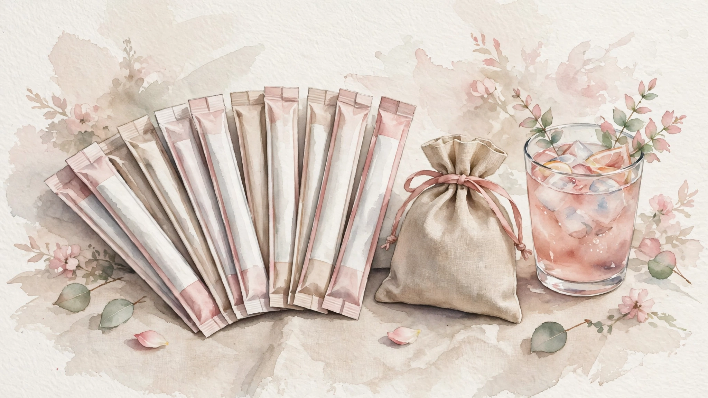

トップ ＞ インナーケア・サプリ ＞ 個包装・スティックタイプの数え方と保管
個包装・スティックタイプの数え方と保管

粉末や顆粒を1回分ずつ包んだ個包装・スティックタイプは、計量の手間がなく、持ち運びにも向いた形です。このタイプは「数え方」が管理の中心になります。この記事では、個包装タイプの表示の読み方と、数え方・保管の工夫を整理します。
1包あたりの表示と、1日分の関係
まず確認したいのは、1包が1日分なのかどうかです。1日1包のタイプもあれば、1日2包を目安とするタイプもあります。栄養成分表示も「1包あたり」と「1日分あたり」で書かれ方が違うため、目安量の欄と並べて読んでください。
箱の総量から何日分かを計算するときは、「総包数÷1日の包数」が日数です。30包入りで1日2包なら15日分です。この計算を買うときにしておくと、価格を1日あたりで比べるときの物差しにもなります。
残り包数で管理できる利点
個包装の利点は、残量が数で見えることです。箱に残っている包数を数えれば、残り日数がそのまま分かります。定期便の間隔や買い足しの判断も、この数え方で具体的にできます。「あと10包だから、5日分」という具合です。
開封した箱には、使い始めた日を書いておくと、開封後の目安とも照らし合わせられます。包の端に日付を書く必要はなく、箱側の管理で十分です。
切り離した包の保管
箱から切り離した包は、湿気の少ない場所にまとめ、ポーチや小さな容器に入れて保管します。1包ずつが薄く軽いため、紛失しやすい点にも注意してください。カバンに入れっぱなしの包が増えると、残量の把握がずれていきます。
旅行への持参は、このタイプの得意分野です。日数分の包数だけを持っていけばよく、元の箱の表示は写真で控えておくと、現地でも目安量の確認ができます。個包装は「数えること」がそのまま管理になる、扱いやすい形です。
溶かし方の案内も、表示の中にある
粉末・スティックタイプでは、溶かし方の案内も表示の大切な部分です。「コップ1杯（約○○mL）の水に溶かして」「よくかき混ぜて」といった文言が、目安量の近くに書かれています。水の量は味の感じ方にも関わるため、案内の量を出発点にしてください。熱い飲み物で溶かしてよいかどうかも、案内文で確認するポイントです。
作り置きについては、「溶かしたらすぐにお飲みください」といった案内があることが一般的です。朝に作って夕方に飲む、といった使い方は表示の想定から外れるため、飲む直前に1包を開ける段取りにします。包を開けるタイミングまで含めて、個包装は「1回分の設計」がされている形です。
スティックの切り口で手を切らないよう、開け方の小さな注意が書かれていることもあります。細かい案内まで含めて、包の表示は使い方の説明書です。数えること、溶かし方を読むこと。この2点が、個包装タイプとの付き合い方です。
残りの包を数えるときは、箱の外側に「○月○日に開封、残り○包」と書いておくと、家族と共有している場合でも状況が伝わります。個包装は分けやすい形ですが、目安量は人ごとに確認するのが前提です。誰の分として数えているのかを、箱に書いておく習慣も役立ちます。
スティックタイプは、1包の量が決まっている分、飲む量のばらつきが出にくい形です。反面、包を開ける手間や、ゴミの出方といった日常の小さな点も、続けやすさに関わります。自治体の分別ルールに沿って、包の処分方法も確認しておいてください。
職場や外出先に数包を持っていく場合は、ポーチの中で他の物と混ざらないよう、小さな袋にまとめる工夫が有効です。包の表示が見える向きで入れておくと、目安量の確認もその場でできます。数えられる形は、管理の手間を確実に減らしてくれます。
セラフィナ「個包装は数えるのが仕事。何日分か、買うときに計算しておこう」